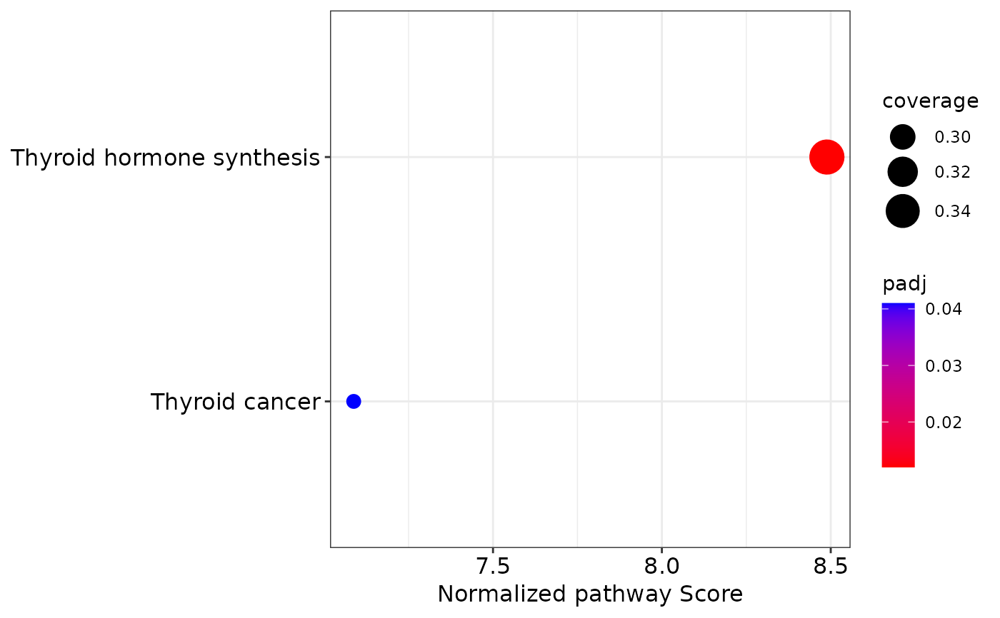

Prepare miRNA-augmented pathways for integrative miRNA-mRNA pathway analyses
Source:R/topological-integration.R
preparePathways.RdThis function takes influential miRNA-mRNA interactions, identified by the
mirnaIntegration() function, and adds them to biological pathways
retrieved from a pathway database such as KEGG, WikiPathways and
Reactome. The pathways returned from this function are needed to perform
a topologically-aware integrative pathway analysis (TAIPA) through the
topologicalAnalysis() function.
Usage
preparePathways(
mirnaObj,
database = "KEGG",
organism = "Homo sapiens",
minPc = 10,
size = NULL,
BPPARAM = bpparam()
)Arguments
- mirnaObj
A
MirnaExperimentobject containing miRNA and gene data- database
The name of the database to use. It must be one of:
KEGG,Reactome, andWikiPathways. Default isKEGG- organism
The name of the organism under consideration. The different databases have different supported organisms. To see the list of supported organisms for a given database, use the
supportedOrganisms()function. Default specie isHomo sapiens- minPc
The minimum percentage of measured features that a pathway must have for being considered in the analysis. Default is 10. See the details section for additional information
- size
An optional numeric vector of length 2, containing the minimum and maximum number of nodes for each pathway. For example, if
size = c(10, 150), all the pathways with less than 10 nodes and those with more than 150 nodes will be discarded. Default is NULL to keep all pathways- BPPARAM
The desired parallel computing behavior. This parameter defaults to
BiocParallel::bpparam(), but this can be edited. SeeBiocParallel::bpparam()for information on parallel computing in R
Details
To create augmented pathways, this function uses the graphite R package
to download biological networks from the above mentioned databases. Then,
each pathway is converted to a graph object, and significant miRNA-mRNA
interactions are added to the network. Further, edge weights are added
according to interaction type.
At this point, biological pathways with few nodes measured are excluded
from this analysis. This is required because, during differential expression
analysis, lowly expressed features are removed. Therefore, some pathways
might result significantly affected even if only 1% of nodes is perturbed.
The default behavior is to exclude pathways with less than 10% of
representation (minPc = 10).
Finally, this function performs a breadth-first search (BFS) algorithm to topologically sort pathway nodes so that each individual node occurs after all its upstream nodes. Nodes within cycles are considered leaf nodes.
Information about pathway coverage, i.e. the percentage of nodes with
expression measurments, edge weights, topological sorting order, and the
parameters used to create the networks are all stored in the graphData
slot of each graphNEL object.
References
Sales, G., Calura, E., Cavalieri, D. et al. graphite - a Bioconductor package to convert pathway topology to gene network. BMC Bioinformatics 13, 20 (2012), https://doi.org/10.1186/1471-2105-13-20.
Author
Jacopo Ronchi, jacopo.ronchi@unimib.it
Examples
# \donttest{
# load example MirnaExperiment object
obj <- loadExamples()
# perform integration analysis with default settings
obj <- mirnaIntegration(obj)
#> Since data derive from paired samples, a correlation test will be used.
#> Performing Spearman's correlation analysis...
#> A statistically significant correlation between 215 miRNA-target pairs was found!
# retrieve pathways from KEGG and augment them with miRNA-gene interactions
paths <- preparePathways(obj)
#> Downloading pathways from KEGG database...
#> Converting identifiers to gene symbols...
#> Adding miRNA-gene interactions to biological pathways...
#> Warning: 161 pathways have been ignored because they contain too few nodes with gene expression measurement.
#> Performing topological sorting of pathway nodes...
# perform the integrative pathway analysis with 1000 permutations
ipa <- topologicalAnalysis(obj, paths, nPerm = 1000)
#> Calculating pathway scores...
#> Generating random permutations...
#> Calculating p-values with 1000 permutations...
#> Correcting p-values through the max-T procedure...
#> The topologically-aware integrative pathway analysis reported 2 significantly altered pathways!
# access the results of pathway analysis
integratedPathways(ipa)
#> pathway coverage score
#> Thyroid hormone synthesis Thyroid hormone synthesis 0.3469388 12.12941
#> Thyroid cancer Thyroid cancer 0.2820513 11.56291
#> normalized.score P.Val adj.P.Val
#> Thyroid hormone synthesis 8.488582 0.000999001 0.012
#> Thyroid cancer 7.087549 0.000999001 0.041
# create a dotplot of integrated pathways
integrationDotplot(ipa)

# explore a specific biological network
visualizeNetwork(ipa, "Thyroid hormone synthesis")
 # }
# }